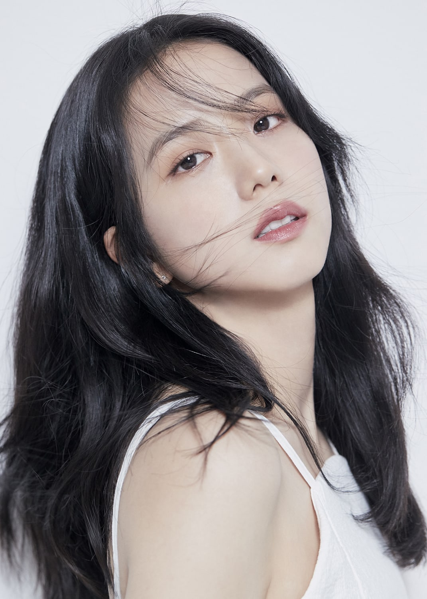

JENNIE RUBY JANE
Jennie Kim (Korean: 김제니; born January 16, 1996), known mononymously as Jennie, is a South Korean singer and rapper. Born and raised in South Korea, Jennie studied in New Zealand for five years before returning to South Korea in 2010. She debuted as a member of the girl group Blackpink, formed by YG Entertainment, in August 2016. In November 2018, Jennie made her debut as a solo artist with the single "Solo". The song was commercially successful, topping both the Gaon Digital Chart and Billboard's World Digital Songs chart. In 2023, she will be making her acting debut in the HBO series The Idol, under the stage name Jennie Ruby Jane.

The Idol is an upcoming American drama television series created by Abel "The Weeknd" Tesfaye, Reza Fahim, and Sam Levinson for HBO. It is set to star Lily-Rose Depp and Tesfaye in the leading roles, with Suzanna Son, Troye Sivan, Moses Sumney, Jane Adams, Dan Levy, Jennie Ruby Jane, Eli Roth, Rachel Sennott, Hari Nef, Da'Vine Joy Randolph, Mike Dean, Ramsey, and Hank Azaria appearing as supporting characters.[1][2] The series will also mark Anne Heche's final television appearance, who died on August 11, 2022.
"Solo" (stylized in all caps) is the debut solo single of South Korean singer, rapper, and Blackpink member Jennie. Released on November 12, 2018, through YG and Interscope, the song was written by Teddy Park and produced by him alongside 24. Musically, "Solo" is a dance, pop, and hip hop song with EDM elements. Its lyrical content revolves around the theme of independence after a break-up.
LALISA MANOBAL
Lalisa Manobal (also spelled Manoban; born Pranpriya Manobal; March 27, 1997), known mononymously as Lisa, is a Thai rapper, singer and dancer based in South Korea. She is a member of the South Korean girl group Blackpink formed by YG Entertainment. Lisa made her solo debut with her single album Lalisa in September 2021. The album sold over 736,000 copies in its release week in South Korea, making her the first female artist to do so. The music video for its lead single of the same name recorded 73.6 million views on YouTube in first 24 hours of its release, becoming the most-viewed music video in the first 24 hours on the platform by a solo artist. The song earned Lisa two Guinness World Records as well as the first MTV Video Music Award ever won by a K-pop soloist.

BLACKPINK's LISA was the Most Streamed K-Pop Female Soloist on Spotify globally in 2022 Content Tag BLACKPINK's LISA continues to prove her impact as a kpop solo artist. Spotify has published the lists of the best songs and most played artists on the platform in 2022 under the name "Spotify Wrapped," and as expected, Lisa appears among the featured artists.
"Money" (stylized in all caps) is a song by Thai rapper, singer, and Blackpink member Lisa from her debut single album Lalisa (2021). It was released to US contemporary hit radio by Interscope Records as the second single from the album on November 9, 2021 after achieving viral success. The lyrics for the track were written by Bekuh Boom and Vince, with music being composed by them alongside 24 and R. Tee.

ROSE
Roseanne Park (born 11 February 1997), known mononymously as Rosé (Korean: 로제), is a Korean-New Zealand singer and dancer[4][5] based in South Korea.[1] Born in New Zealand and raised in Australia, Rosé signed with South Korean label YG Entertainment following a successful audition in 2012 and trained for four years before debuting as a member of the girl group Blackpink in August 2016. In March 2021, Rosé made her solo debut with her single album R. The album sold 448,089 copies in its first week, the highest for a Korean female soloist. Lead single "On the Ground" was also a commercial success, topping the Billboard Global 200 and peaking in the top five domestically.

On the Ground" is the debut solo single by Korean-New Zealand singer and Blackpink member Rosé. It was released on 12 March 2021 by YG Entertainment as the lead single from her debut single album, R. It was written by Rosé alongside Amy Allen, Raúl Cubina, Jon Bellion, Jorgen Odegard and Teddy Park, and was produced by the latter three alongside Ojivolta and 24.
Rosé has won over audiences worldwide with her jaw-dropping vocals. I mean, have you heard the way she hits those high notes? She's even reportedly earned the nickname "golden voice" in Korea for her ability to comfort fans and make people happy with her singing.
KIM JISOO
Kim Ji-soo (Korean: 김지수; born January 3, 1995), known mononymously as Jisoo, is a South Korean singer and actress. She is best known as a member of the best-selling K-pop girl group Blackpink, formed by YG Entertainment, in August 2016. Outside of her music career, she made her acting debut with a cameo role in the 2015 series The Producers and played her first leading role in the JTBC series Snowdrop (2021–22).
Snowdrop (Korean: 설강화; Hanja: 雪降花; RR: Seolganghwa) is a South Korean television series starring Jung Hae-in, Jisoo, Yoo In-na, Jang Seung-jo, Yoon Se-ah, Kim Hye-yoon, and Jung Yoo-jin. It aired on JTBC from December 18, 2021, to January 30, 2022, every Saturday and Sunday at 22:30 (KST) for 16 episodes.
Snowdrop takes place in 1987, a pivotal year in South Korean history that included the June 1987 Democracy Movement, a mass protest movement with the purpose of forcing the dictatorship in South Korea to hold fair elections, and the resulting December 1987 democratic elections, which led to the end of the authoritarian Fifth Republic of Korea and the establishment of the democratic Sixth Republic of Korea. Snowdrop is set in November and December 1987. Lim Soo-ho (Jung Hae-in) plays a graduate student who is found covered in blood by Eun Yeong-ro (Jisoo), a female university student and hides him from the government in her dorm room. However, it is revealed that Soo-ho is not who he appears to be. Against the backdrop of political upheaval, the pair's story unfolds and the two develop a romantic relationship.